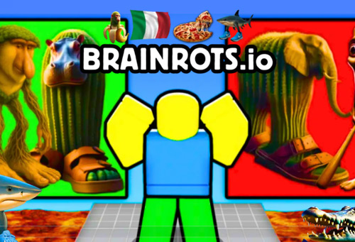
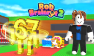
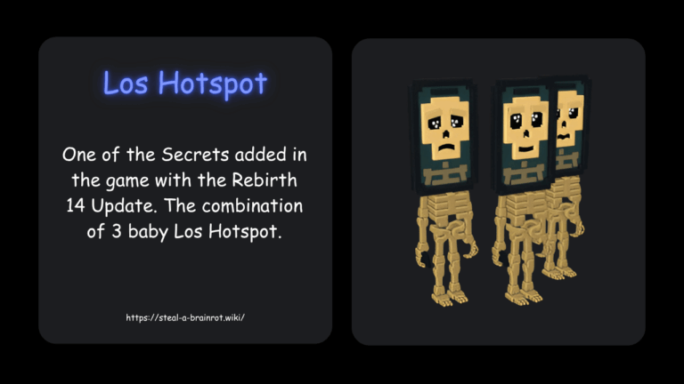

Introduction
Brainrots.io is a chaotic multiplayer arena game that blends classic .io snake mechanics with the absurd, viral humor of "Italian brainrot" memes. Instead of standard animal skins, you pilot bizarre entities like crocodile airplanes and cappuccinos in tutus, absorbing smaller meme objects to grow your collection. What makes it uniquely addictive is the juxtaposition of tight, survival-based gameplay with completely unhinged visual comedy. Players love it because every match feels like a hilarious, unpredictable battle for meme supremacy. It takes the familiar thrill of outmaneuvering opponents and forcing head-on collisions, wrapping it in a layer of internet culture that guarantees a laugh, even when you're suddenly eliminated after a 30-second run.
Getting Started

To start playing Brainrots.io, simply head to the official website, select your preferred absurd meme skin, and drop into the arena. Controls are intuitive: use your mouse to steer or WASD/arrow keys if you prefer keyboard input. Your primary objective is to navigate your brainrot entity around the map, consuming glossy dots and smaller meme entities to increase your length. Remember the core mechanic: your head is your only vulnerable point, while your elongated body acts as both a weapon and a physical barrier. Movement relies on continuous momentum and turning radiuses rather than instant grid-snapping. In your first few matches, focus on survival rather than aggression. Learn how your chosen meme entity handles corners and how to manage your speed. Since early runs often last only 30 to 90 seconds, use these initial deaths to read opponent tempos and understand the arena's spatial dynamics before attempting to dominate the leaderboard.
Basic Tips
Mastering the basics of Brainrots.io requires unlearning some common .io habits. First, stop boosting in open space; burning speed when there’s nothing to gain leaves you in a thin line with no room to turn, making you an easy target for side-drifts. Second, grow in compact loops. A tight spiral keeps your head close to your body, providing safe turn options when opponents try to pinch you. Third, never chase a fresh loot pile directly. These piles act as magnets for third-party players. Instead, swing wide, approach from the side, and stay ready to turn away. Fourth, use your body to threaten space. Long bodies aren't just for score; they create massive surface areas to block off lanes. Finally, avoid oversteering. Since movement is momentum-based, sharp, panicked turns often lead to accidental self-collisions or easy cut-offs by experienced players. Patience and spatial awareness will keep you alive much longer than raw speed.
Advanced Strategies

Once you survive the early game, shift your focus to advanced spatial control. The cleanest kills in Brainrots.io come from cut-offs: slip in front of a moving opponent and close the angle so their only safe line is occupied by your body. To execute this, you must predict where panic turns happen. When you trap an opponent, they will likely brake or sharply turn to avoid you; anticipate this reaction and position your head to intercept their escape route. Additionally, use your length to zone out areas of the map. By weaving your body in wide arcs, you can force smaller players into the center where larger entities are hunting. Another key strategy is playing the "second arrival." When two large players clash and drop massive loot, hang back and let them fight. Arriving second allows you to scoop up the high-value meme fragments while the victors are vulnerable and distracted by their own newly expanded bodies.
Pro Tips

Great players separate themselves through psychological manipulation and micro-movements. First, master the fake cut-off: drift as if you're going to trap an opponent, forcing them to waste their boost to escape, then immediately reverse your angle to catch them off guard. Second, utilize edge-camping strategically; the map boundaries act as an invisible wall that halves an opponent's escape routes, making cut-offs significantly easier to execute. Third, bait boosts in tight corridors. If you know an opponent is chasing you, suddenly brake or make a micro-turn right as they boost, causing them to overshoot and crash into your body. Finally, always track the largest entities; their movements dictate the flow of the entire lobby, and aligning your path with their hunting zones guarantees easy cleanup of their scraps.
Conclusion
Brainrots.io perfectly balances intense, skill-based .io survival mechanics with hilarious, meme-driven absurdity. By mastering momentum, mastering the art of the cut-off, and embracing the chaotic humor of the arena, you'll quickly climb the ranks. Jump in, pick your favorite brainrot skin, and start building your meme empire today!